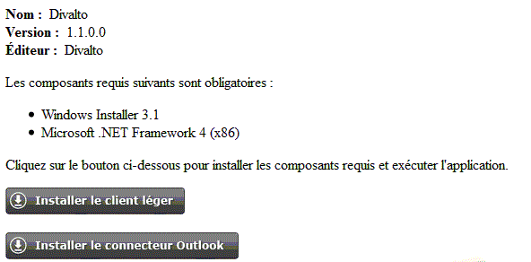

Une fois le fichier d'installation .msi personnalisé et prêt à l'emploi, vous pouvez le distribuer en le mettant à disposition sur un serveur d’entreprise. Cette mise à disposition peut être faite :
Sur un répertoire partagé d’un serveur du réseau local.
Sur un serveur Web.
Après installation du produit "Harmony Power Foundation" sur le serveur d'applications, le répertoire x:\Divalto\Internet\LCWebService contient, en plus de la page DHTerminalServer.asmx servant à la connexion des postes clients en mode Service Web et du fichier d’installation DivaltoSetup.msi du client léger Harmony :
Le fichier d’installation du connecteur Outlook (ConnecteurDivaltoPourOulook2010.vsto ou DivaltoLoadFicheOutlook2010.vsto selon la version).
Une page d’accueil modèle (index.html) proposant le téléchargement du connecteur et du client léger :

Un lien vers le fichier DivaltoSetup.msi personnalisé ou vers la page d’accueil du téléchargement peut-être envoyé aux utilisateurs qui chargeront le client en quelques clics.